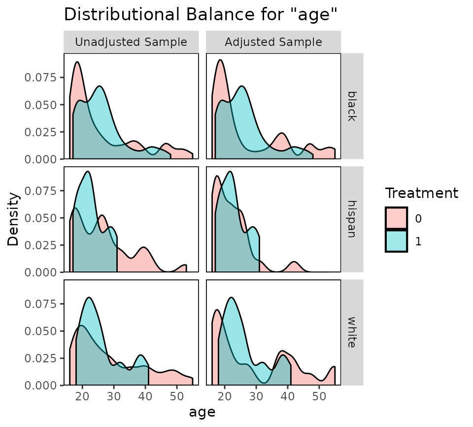
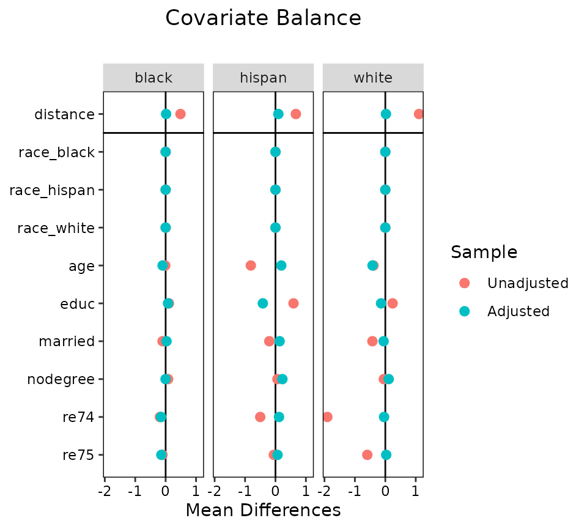
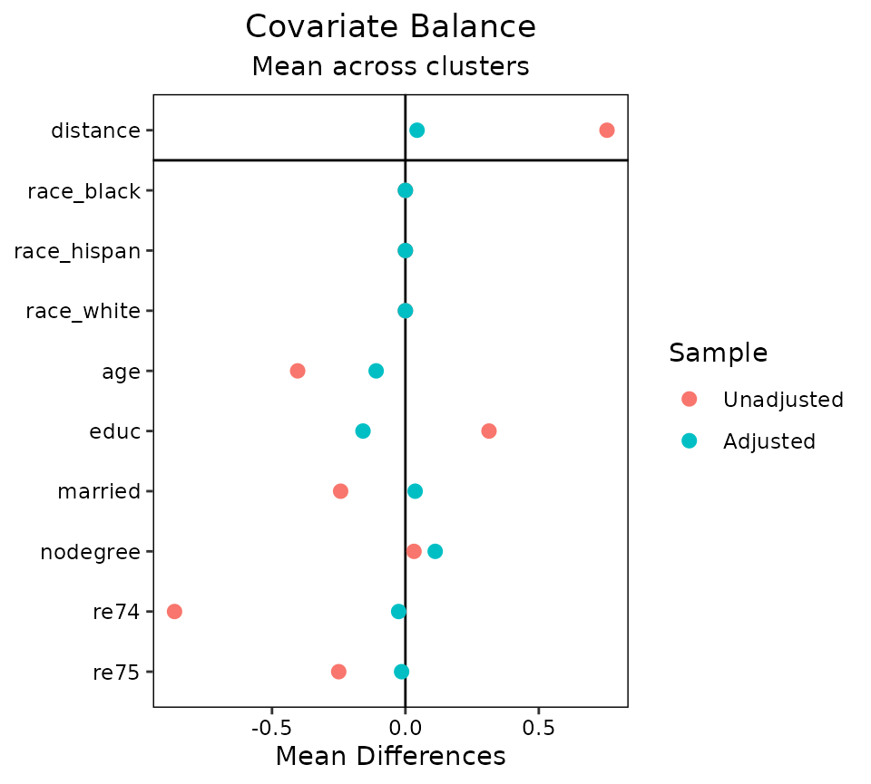
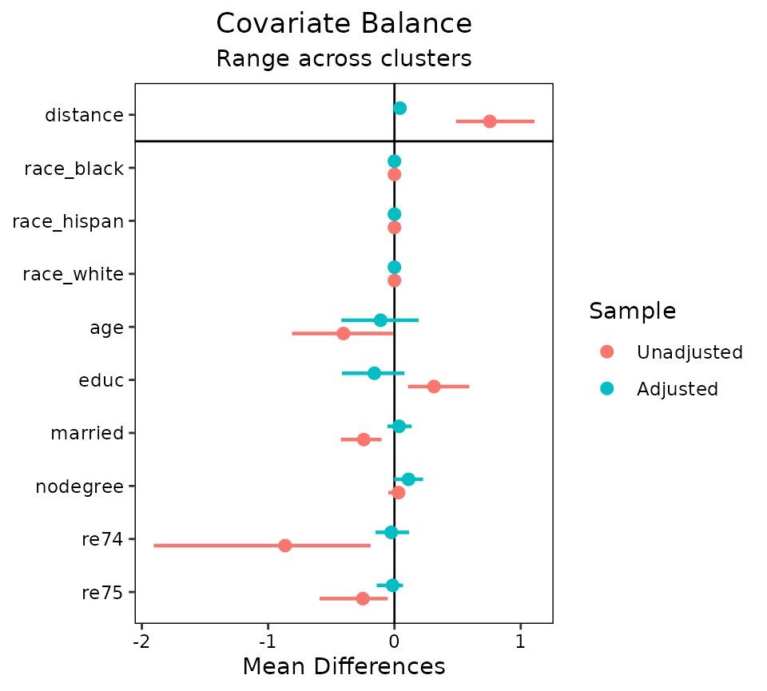
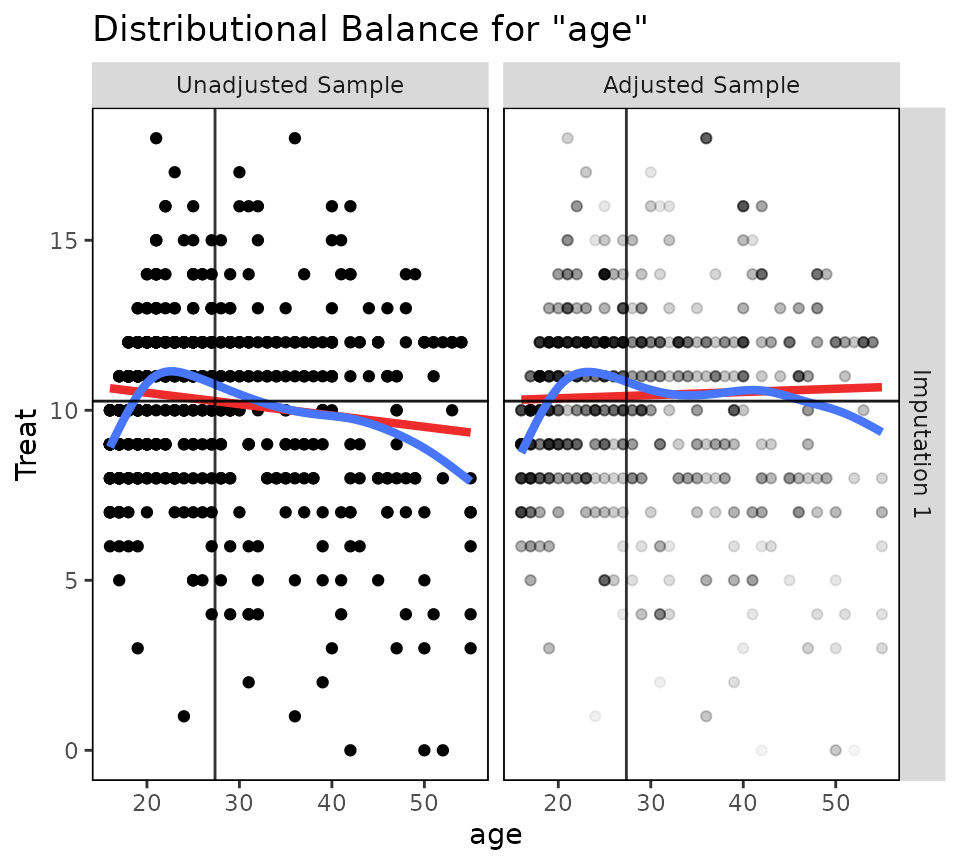
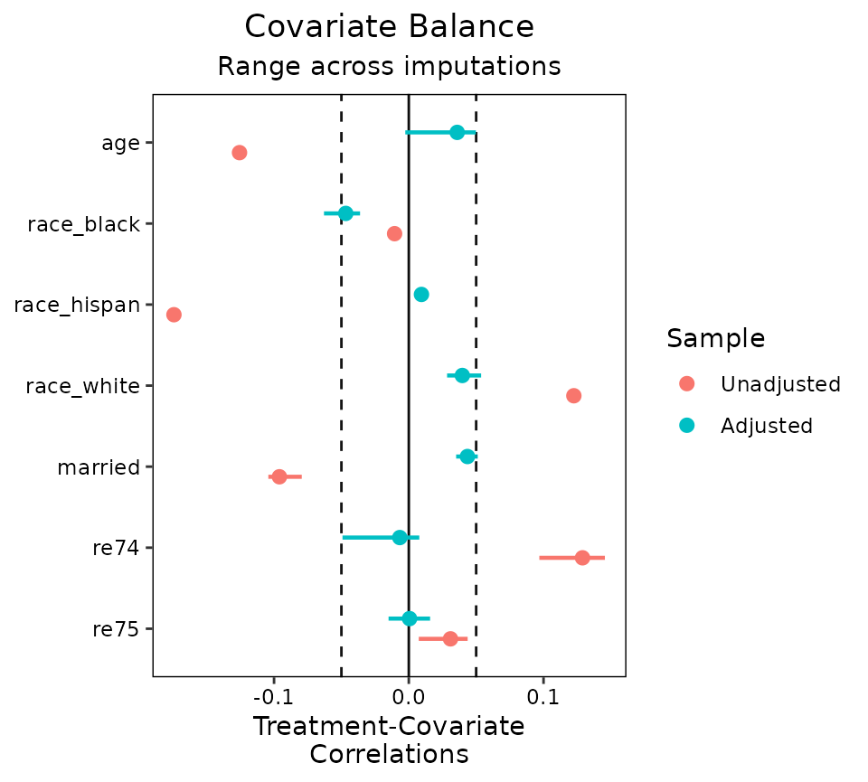
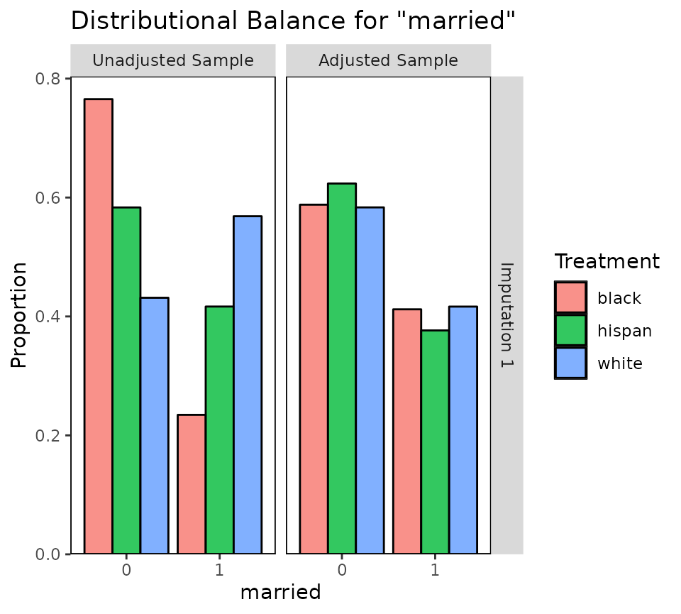
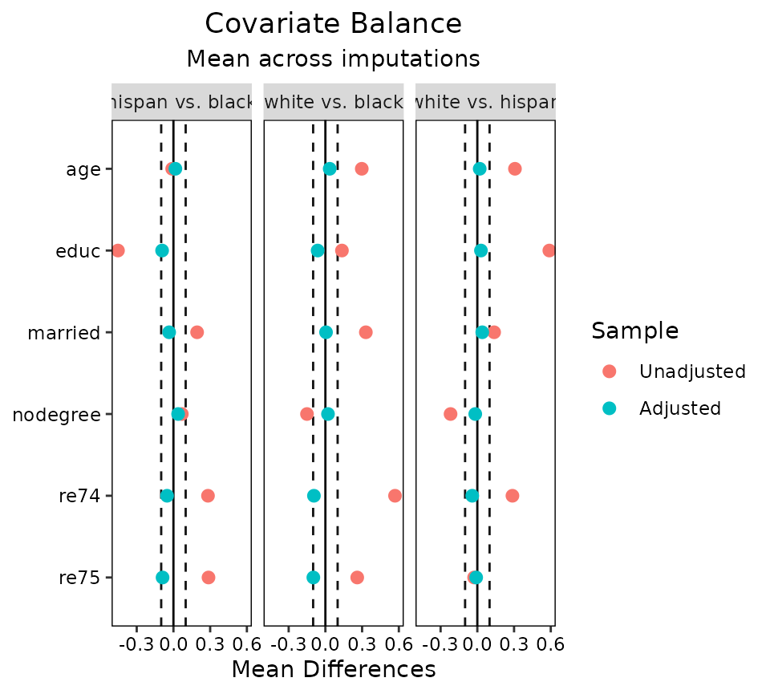

Appendix 2: Using cobalt with Clustered, Multiply Imputed, and Other Segmented Data
Noah Greifer
2022-10-31
Source:vignettes/cobalt_A2_segmented_data.Rmd
cobalt_A2_segmented_data.RmdThis is a guide for the use of cobalt with more
complicated data than is typical in studies using propensity scores and
similar methods. In particular, this guide will explain
cobalt’s features for handling multilevel or grouped data
and data arising from multiple imputation. The features described here
set cobalt apart from other packages that assess balance
because they exist only in cobalt. It will be assumed that
the basic functions of cobalt are understood; this guide
will only address issues that are unique to these data scenarios.
cobalt and Segmented Data
First, let’s understand segmented data. Segmented data arises when
the data involved in balance assessment needs to be split into segments
to appropriately assess balance. These scenarios include clustered
(e.g., multilevel) data, in which case balance should be assessed within
each cluster; data arising from a sequential study, in which case
balance should be assessed at each time point; multi-category
treatments, in which case balance should be assessed for each pair of
treatments; and multiply imputed data, in which case balance should be
assessed within each imputation. cobalt can handle all
these scenarios simultaneously, but how it does so may be a little
complicated. This vignette explains how these scenarios are handled.
At the core is the idea that the most basic unit of balance
assessment is a balance statistic for a covariate For binary treatments
or pairs of treatment levels, this can be the (standardized) mean
difference, variance ratio, or Kolmogorov-Smirnoff (KS) statistic. For
continuous treatments, this is the treatment-covariate correlation.
These statistics are generated by bal.tab() and can be
plotted using love.plot() when the data are not segmented.
When the data are segmented, these statistics need to be generated
within each segment. When the segmentation occurs in several ways in the
same dataset (e.g., with clustered and multiply imputed data, or with
longitudinal data with multi-category treatments), balance assessment
should reflect each layer of segmentation.
Although the idea of simply splitting data into segments is simple,
there are a few options and limitations in cobalt that are
important to consider. The basic idea is the same regardless of how the
data are segmented: for each layer of segmentation, balance is assessed
within segments of that layer, and the layers stack heirarchically. For
example, for clustered and multiply imputed data, first the data are
split by cluster; within each cluster, the data are split by imputation;
balance statistics are computed within each imputation within each
cluster. In some cases, a summary of balance across segments can be
produced to simplify balance assessment. Matching and weighting are
compatible with segmented data, but subclassification is its own special
form of segmentation that is treated differently and will not be
considered here.
Each of cobalt’s primary functions
(bal.tab(), bal.plot(), and
love.plot()) have features to handle segmented data sets.
The following sections describe for each data scenario the relevant
features of each function. We’ll take a look at a few common examples of
segmented data: clustered data, multiply imputed data, and
multi-category and multiply imputed data.
Clustered Data
In clustered data, the data set must contain a variable denoting the
group each individual belongs to. This may be a group considered a
nuisance that must be accounted for to eliminate confounding (e.g.,
hospitals in a multi-site medical treatment study), or a group of
concern for effect moderation (e.g., race or gender). In the examples
below, we will imagine that we are interested in the ATT of
treat on re78 stratified by race.
Thus, we will condition on the propensity score within each cluster.
First, let’s estimate propensity scores and perform matching within
each race group. We can do this by performing separate analyses within
each cluster, but we can also use exact matching in MatchIt
to ensure matches occur within clusters. It is important to note that
this analysis does not necessarily represent a sound statistical
analysis and is being used for illustrative purposes only.
library("cobalt")
data("lalonde", package = "cobalt")
m.out <- MatchIt::matchit(treat ~ race*(age + educ + married + nodegree + re74 + re75),
data = lalonde, method = "nearest", exact = "race",
replace = TRUE, ratio = 2)
bal.tab()
The output produced by bal.tab() with clustered data
contains balance tables for each cluster and a summary of balance across
clusters. To use bal.tab() with groups, there are four
arguments that should be considered. These are cluster,
which.cluster, cluster.summary, and
cluster.fun.
clusteris a vector of group membership for each unit or the name of a variable in a provided data set containing group membership.which.clusterdetermines for which clusters balance tables are to be displayed, if any. (Default: display all clusters)cluster.summarydetermines whether the cluster summary is to be displayed or not. (Default: hide the cluster summary)cluster.fundetermines which function(s) are used to combine balance statistics across clusters for the cluster summary. (Default: whenabs = FALSE, minimum, mean, and maximum; whenabs = TRUE, mean and maximum)
The arguments are in addition to the other arguments that are used
with bal.tab() to display balance. imp.summary
and imp.fun can also be set as global options by using
set.cobalt.options(). Let’s examine balance on our data
within each race group.
bal.tab(m.out, cluster = "race")## Call
## MatchIt::matchit(formula = treat ~ race * (age + educ + married +
## nodegree + re74 + re75), data = lalonde, method = "nearest",
## exact = "race", replace = TRUE, ratio = 2)
##
## Balance by cluster
##
## - - - Cluster: black - - -
## Balance Measures
## Type Diff.Adj
## distance Distance 0.0150
## race_black Binary 0.0000
## race_hispan Binary 0.0000
## race_white Binary 0.0000
## age Contin. -0.1001
## educ Contin. 0.0794
## married Binary 0.0288
## nodegree Binary -0.0032
## re74 Contin. -0.1501
## re75 Contin. -0.1406
##
## Sample sizes
## 0 1
## All 87. 156
## Matched (ESS) 41.42 156
## Matched (Unweighted) 76. 156
## Unmatched 11. 0
##
## - - - Cluster: hispan - - -
## Balance Measures
## Type Diff.Adj
## distance Distance 0.0947
## race_black Binary 0.0000
## race_hispan Binary 0.0000
## race_white Binary 0.0000
## age Contin. 0.1914
## educ Contin. -0.4159
## married Binary 0.1364
## nodegree Binary 0.2273
## re74 Contin. 0.1161
## re75 Contin. 0.0683
##
## Sample sizes
## 0 1
## All 61. 11
## Matched (ESS) 15.12 11
## Matched (Unweighted) 18. 11
## Unmatched 43. 0
##
## - - - Cluster: white - - -
## Balance Measures
## Type Diff.Adj
## distance Distance 0.0216
## race_black Binary 0.0000
## race_hispan Binary 0.0000
## race_white Binary 0.0000
## age Contin. -0.4201
## educ Contin. -0.1403
## married Binary -0.0556
## nodegree Binary 0.1111
## re74 Contin. -0.0417
## re75 Contin. 0.0298
##
## Sample sizes
## 0 1
## All 281. 18
## Matched (ESS) 25.92 18
## Matched (Unweighted) 31. 18
## Unmatched 250. 0
## - - - - - - - - - - - - - -Here we see balance tables for each cluster. These are the same
output we would see if we use bal.tab() for each cluster
separately (e.g., using the subset argument). All the
commands that work for bal.tab() also work here with the
same results, except that balance tallies and the variable with the
greatest imbalance will not be displayed as they usually are when a
threshold is specified. Next, we can request a balance summary across
clusters and hide the individual clusters by setting
which.cluster = .none:
bal.tab(m.out, cluster = "race", which.cluster = .none)## Call
## MatchIt::matchit(formula = treat ~ race * (age + educ + married +
## nodegree + re74 + re75), data = lalonde, method = "nearest",
## exact = "race", replace = TRUE, ratio = 2)
##
## Balance summary across all clusters
## Type Min.Diff.Adj Mean.Diff.Adj Max.Diff.Adj
## distance Distance 0.0150 0.0438 0.0947
## race_black Binary 0.0000 0.0000 0.0000
## race_hispan Binary 0.0000 0.0000 0.0000
## race_white Binary 0.0000 0.0000 0.0000
## age Contin. -0.4201 -0.1096 0.1914
## educ Contin. -0.4159 -0.1590 0.0794
## married Binary -0.0556 0.0366 0.1364
## nodegree Binary -0.0032 0.1117 0.2273
## re74 Contin. -0.1501 -0.0252 0.1161
## re75 Contin. -0.1406 -0.0142 0.0683
##
## Total sample sizes across clusters
## 0 1
## All 429. 185
## Matched (ESS) 82.47 185
## Matched (Unweighted) 125. 185
## Unmatched 304. 0This table presents the minimum, mean, and maximum balance statistics
for each variable across clusters. Setting un = TRUE will
also display the same values for the adjusted data set. With binary
treatments, setting disp = c(v = TRUE) or
thresholds = c(v = 2) will display the same values for
variance ratios. Setting abs = TRUE requests summaries of
absolute balance statistics which displays the extremeness of balance
statistics for each variable; thus, if, for example, in some groups
there are large negative mean differences and in other groups there are
large positive mean differences, this table will display large mean
differences, even though the average mean difference is close to 0.
While it’s important to know the average balance statistic overall,
assessing the absolute balance statistics provides more information
about balance within each cluster rather than in aggregate.
To examine balance for just a few clusters at a time, users can enter
values for which.cluster. This can be a vector of clusters
indices (i.e., 1, 2, 3, etc.) or names (e.g., “black”, “hispan”,
“white”). Users also specify which.cluster = .none as above
to omit cluster balance for all clusters and just see the summary across
clusters. Users can force display of the summary across clusters by
specifying TRUE or FALSE for
cluster.summary. When which.cluster = .none,
cluster.summary will automatically be set to
TRUE (or else there wouldn’t be any output!). When
examining balance within a few groups, it can be more helpful to examine
balance within each group and ignore the summary. Below are examples of
the use of which.cluster and cluster.summary
to change bal.tab() output.
#Just for black
bal.tab(m.out, cluster = "race", which.cluster = "black")## Call
## MatchIt::matchit(formula = treat ~ race * (age + educ + married +
## nodegree + re74 + re75), data = lalonde, method = "nearest",
## exact = "race", replace = TRUE, ratio = 2)
##
## Balance by cluster
##
## - - - Cluster: black - - -
## Balance Measures
## Type Diff.Adj
## distance Distance 0.0150
## race_black Binary 0.0000
## race_hispan Binary 0.0000
## race_white Binary 0.0000
## age Contin. -0.1001
## educ Contin. 0.0794
## married Binary 0.0288
## nodegree Binary -0.0032
## re74 Contin. -0.1501
## re75 Contin. -0.1406
##
## Sample sizes
## 0 1
## All 87. 156
## Matched (ESS) 41.42 156
## Matched (Unweighted) 76. 156
## Unmatched 11. 0
## - - - - - - - - - - - - - -
#Just the balance summary across clusters with only the mean
bal.tab(m.out, cluster = "race", which.cluster = .none, cluster.fun = "mean")## Call
## MatchIt::matchit(formula = treat ~ race * (age + educ + married +
## nodegree + re74 + re75), data = lalonde, method = "nearest",
## exact = "race", replace = TRUE, ratio = 2)
##
## Balance summary across all clusters
## Type Mean.Diff.Adj
## distance Distance 0.0438
## race_black Binary 0.0000
## race_hispan Binary 0.0000
## race_white Binary 0.0000
## age Contin. -0.1096
## educ Contin. -0.1590
## married Binary 0.0366
## nodegree Binary 0.1117
## re74 Contin. -0.0252
## re75 Contin. -0.0142
##
## Total sample sizes across clusters
## 0 1
## All 429. 185
## Matched (ESS) 82.47 185
## Matched (Unweighted) 125. 185
## Unmatched 304. 0These can also be set as global options by using, for example,
set.cobalt.options(cluster.fun = "mean"), which allows
users not to type a non-default option every time they call
bal.tab.
bal.plot()
bal.plot() functions as it does with non-clustered data,
except that multiple plots can be produced at the same time displaying
balance for each cluster. The arguments to bal.plot() are
the same as those for bal.tab(), except that
cluster.summary is absent. Below is an example of the use
of bal.plot() with clustered data:
bal.plot(m.out, var.name = "age", cluster = "race", which = "both")
Balance plots for each cluster are displayed next to each other. You
can specify which.cluster as with bal.tab() to
restrict plotting to a subset of clusters.
love.plot()
love.plot() shines with clustered data because there are
several options that are unique to cobalt and help with the
visual display of balance. One way to display cluster balance with
love.plot() is to produce different plots for each cluster,
as bal.plot() does. This method should not be used with
many clusters, or the plots will be unreadable. In our present example,
this is not an issue. To do so, the which.cluster argument
in bal.tab() or love.plot() must be set to the
names or indices of the clusters for which balance is to be plotted. If
which.cluster is set to .all (the default),
all clusters will be plotted. Below is an example:
love.plot(m.out, cluster = "race")
These plots function like those from using love.plot()
with non-clustered data, except that they cannot be sorted based on the
values of the balance statistics (they can still be sorted
alphabetically, though). This is to ensure that the covariates line up
across the plots. The same axis limits will apply to all plots.
Second, balance can be displayed summarizing across clusters by
plotting an aggregate function (i.e., the mean or maximum) of the
balance statistic for each covariate across clusters. To do this,
which.cluster in the love.plot command must be
set to .none. To change which aggregate function is
displayed, use the argument to agg.fun, which may be “mean”
or “max”. Below is an example:
love.plot(m.out, cluster = "race", which.cluster = .none, agg.fun = "mean")
A third option is to set agg.fun = "range" (the
default), which produces a similar plot as above except that the minimum
and maximum values of the balance statistics for each covariate are
displayed as well. See below for an example:
love.plot(m.out, cluster = "race", which.cluster = .none, agg.fun = "range")
Each point represents the mean balance statistic, and the bars
represent intervals bounded by the minimum and maximum of each balance
statistic. This display can be especially helpful with many clusters
given that the mean alone may not tell the whole story. In some cases,
it might be useful to set limits on the x-axis by using the
limits argument in love.plot(); doing so may
cut off some of the ranges, but whatever is left will be displayed. All
love.plot() arguments work with these methods as they do in
the case of non-clustered data. When var.order is specified
as "unadjusted" or "adjusted", the ordering
will occur on the mean balance statistic when using
agg.fun = "range". Only one argument to stats
is allowed when segmented data produces more than one plot (i.e., as it
would with which.cluster = .all).
Multiply Imputed Data
Multiply imputed data works in a very similar way to clustered data,
except the “grouping” variable refers to imputations rather than
clusters. Thus, each row belongs to one imputation (i.e., the data set
should be in “long” format). The data set used should only include the
imputed data sets and not the original data set with missing values
(unlike Stata’s mi commands, which do require the original
data set as well). The imputed data sets can be of different sizes
(i.e., because matching reduced the size of each differently), but it is
preferred that they are the same size and weights are used to indicate
which units belong to the sample and which do not.
In the example below, we will use a version of the Lalonde data set
with some values missing. We will use the mice package to
implement multiple imputation with chained equations. We will perform
the “within” approach using the MatchThem to perform
propensity score weighting within each imputation with educ
as the continuous treatment (substantively this analysis makes no sense
and is just for illustration).
data("lalonde_mis", package = "cobalt")
#Generate imputed data sets
m <- 10 #number of imputed data sets
imp.out <- mice::mice(lalonde_mis, m = m, print = FALSE)
#Performing generalized propensity score weighting in each imputation
wt.out <- MatchThem::weightthem(educ ~ age + race + married +
re74 + re75, datasets = imp.out,
approach = "within", method = "ps")
bal.tab()
There are a few ways to use bal.tab() with our imputed
data sets. When using the mimids or wimids
methods for MatchThem objects, only the output object needs
to be supplied. When using other methods, an argument to
imp can be supplied; this should contain the imputation
identifiers for each unit or the name of a variable in a supplied
dataset (e.g., through the data argument) that contains the
imputation identifiers. Alternatively, the mids object
resulting from the call to mice can be supplied to the
data argument, which automatically populates
imp. There are four arguments that are only relevant to
imputed data:
impis a vector of imputation numbers for each unit or the name of a variable in an available data set containing the imputation numbers. Ifdatais amidsobject or if themimidsorwimidsmethods are used, this doesn’t need to be specified.which.impdetermines for which imputation balance assessment is to be displayed. Often it can be useful to examine balance in just a few imputations for a detailed examination of what is going on. Can be.allto display all imputations (not recommended),.noneto display none, or a vector providing the imputation numbers for the desired imputations. (Default: no imputations are displayed.)imp.summarydetermines whether to display a summary of balance across imputations. (Default: the summary of balance across imputations is displayed.)imp.fundetermines which function(s) are used to combine balance statistics across imputations for the summary of balance across imputations. (Default: whenabs = FALSE, minimum, mean, and maximum; whenabs = TRUE, mean and maximum)
imp.summary and imp.fun can also be set as
global options by using set.cobalt.options() like the
corresponding cluster options.
In many cases, not all variables are imputed, and often the treatment
variable is not imputed. If each imputation has the same number of
units, you can specify other arguments (e.g., treatment, distance) by
specifying an object of the length of one imputation, and this vector
will be applied to all imputations. This will come in handy when
supplying additional covariates that weren’t involved in the imputation
or propensity score estimation through addl. To do this,
the imputed data set must be sorted by imputation and unit ID.
Because we’re using a wimids object, we can just call
bal.tab() with it as the first argument.
#Checking balance on the output object
bal.tab(wt.out)## Balance summary across all imputations
## Type Min.Corr.Adj Mean.Corr.Adj Max.Corr.Adj
## age Contin. 0.0348 0.0439 0.0533
## race_black Binary -0.0570 -0.0460 -0.0372
## race_hispan Binary 0.0044 0.0086 0.0116
## race_white Binary 0.0317 0.0395 0.0483
## married Binary 0.0357 0.0434 0.0501
## re74 Contin. -0.0254 -0.0001 0.0123
## re75 Contin. -0.0207 -0.0018 0.0108
##
## Average effective sample sizes across imputations
## Total
## Unadjusted 614.
## Adjusted 540.61First, we see a balance summary across all the imputations. This
table presents the minimum, mean, and maximum balance statistics for
each variable across imputations. Setting un = TRUE will
also display the same values for the adjusted data set. Setting
abs = TRUE will make bal.tab report summaries
of the absolute values of the balance statistics. This table functions
in the same way as the table for balance across clusters. Below is the
average sample size across imputations; in some matching and weighting
schemes, the sample size (or effective sample size) may differ across
imputations.
To view balance on individual imputations, you can specify an
imputation number to which.imp. (The summary across
imputations is automatically hidden but can be forced to be displayed
using imp.summary.)
bal.tab(wt.out, which.imp = 1)## Balance by imputation
##
## - - - Imputation 1 - - -
## Balance Measures
## Type Corr.Adj
## age Contin. 0.0491
## race_black Binary -0.0451
## race_hispan Binary 0.0072
## race_white Binary 0.0395
## married Binary 0.0482
## re74 Contin. -0.0031
## re75 Contin. 0.0041
##
## Effective sample sizes
## Total
## Unadjusted 614.
## Adjusted 538.05
## - - - - - - - - - - - - - -As with clustered data, all bal.tab() options work as
with non-imputed data. Indeed, the functions for clustered and imputed
data are nearly identical except that for imputed data,
bal.tab() computes the average sample size across
imputations, whereas for other forms of segmented data,
bal.tab() computes the total sample size across groups.
bal.plot()
bal.plot() works with imputed data as it does with
non-imputed data, except that multiple plots can be produced displaying
balance for multiple imputations at a time. The arguments to
bal.plot() are the same as those for
bal.tab(), except that imp.summary is absent.
Below is an example of the use of bal.plot() with imputed
and matched data from MatchThem, examining balance in the
first imputation:
bal.plot(wt.out, which.imp = 1, var.name = "age", which = "both")
When many imputations are generated, it is recommended not to plot
all at the same time by specifying an argument to
which.imp, as done above. When which.imp is
set to .none, data are combined across imputation to
produce a single plot, which can act as a summary heuristic but which
may obscure imbalances occurring in only a few imputations and not
others.
love.plot()
love.plot() functions with imputed data as it does with
clustered data. It is not recommended to display balance for multiple
imputations at a time, and rather to display balance summarized across
imputations:
love.plot(wt.out, threshold = .05)
Often these ranges will be small if the imputed data sets are very similar to each other, but the more imputations are generated, the wider the ranges tend to be.
Multi-Category Treatments with Multiply Imputed Data
So far we’ve seen how cobalt functions work with one
layer of data segmentation, but now let’s see what it’s like to work
with two or more layers of segmentation. As an example, we’ll first look
at multiply imputed data with a multi-category treatment. With
multi-category treatments, balance is typically assessed by examining
balance statistics computed for pairs of treatments. With multi-category
and multiply imputed data, the data is segmented both by imputation and
by treatment pair.
We’ll use the three-category race variable as our
multi-category treatment and use the same imputed data as above. Again,
the MatchThem package can be used to estimate weights in
multiply imputed data. We’ll use propensity score weighting to estimate
the ATE of race. As before, this analysis makes no sense
substantively and is just for illustration.
#Estimate weights within each imputation using propensity scores
wt3.out <- MatchThem::weightthem(race ~ age + educ + married +
nodegree + re74 + re75,
datasets = imp.out, approach = "within",
method = "ps", estimand = "ATE",
use.mlogit = FALSE)
bal.tab()
Using bal.tab() on the resulting object does the
following: for each pair of treatments, balance is assessed for each
imputation and aggregated across imputations. That is, for each pair of
treatments, everything described in the previous section will occur.
bal.tab(wt3.out)## Balance by treatment pair
##
## - - - black (0) vs. hispan (1) - - -
## Balance summary across all imputations
## Type Min.Diff.Adj Mean.Diff.Adj Max.Diff.Adj
## age Contin. -0.0175 0.0175 0.0487
## educ Contin. -0.1064 -0.0936 -0.0691
## married Binary -0.0444 -0.0345 -0.0231
## nodegree Binary 0.0289 0.0377 0.0428
## re74 Contin. -0.0892 -0.0666 -0.0511
## re75 Contin. -0.1089 -0.0880 -0.0673
##
## Average effective sample sizes across imputations
## black hispan
## Unadjusted 243. 72.
## Adjusted 160.06 55.6
##
## - - - black (0) vs. white (1) - - -
## Balance summary across all imputations
## Type Min.Diff.Adj Mean.Diff.Adj Max.Diff.Adj
## age Contin. 0.0004 0.0329 0.0538
## educ Contin. -0.0751 -0.0600 -0.0323
## married Binary 0.0023 0.0055 0.0088
## nodegree Binary 0.0121 0.0199 0.0251
## re74 Contin. -0.1259 -0.1005 -0.0824
## re75 Contin. -0.1227 -0.1000 -0.0843
##
## Average effective sample sizes across imputations
## black white
## Unadjusted 243. 299.
## Adjusted 160.06 260.45
##
## - - - hispan (0) vs. white (1) - - -
## Balance summary across all imputations
## Type Min.Diff.Adj Mean.Diff.Adj Max.Diff.Adj
## age Contin. 0.0033 0.0154 0.0390
## educ Contin. 0.0235 0.0336 0.0391
## married Binary 0.0294 0.0401 0.0467
## nodegree Binary -0.0215 -0.0178 -0.0133
## re74 Contin. -0.0530 -0.0339 -0.0150
## re75 Contin. -0.0250 -0.0120 0.0044
##
## Average effective sample sizes across imputations
## hispan white
## Unadjusted 72. 299.
## Adjusted 55.6 260.45
## - - - - - - - - - - - - - - - - - - - - - - - -Other options can be supplied to choose how balance is computed with
multi-category treatments; these are described at
?bal.tab.multi and in the main vignette. Importantly,
though, a balance summary across treatment pairs is not available.
bal.plot()
bal.plot() works with multi-category treatments the same
way it does with binary treatments. All treatment levels are displayed
on the same plot. As before, with multiply imputed data, balance can be
examined on one or more imputations at a time.
bal.plot(wt3.out, var.name = "married", which.imp = 1,
which = "both")
love.plot()
With multiple layers of segmentation, love.plot() has a
few options. Before, we saw that we could facet the plot by the segments
or aggregate across segments; with multiple layers, we can do both.
love.plot() can aggregate across as many layers as there
are and can facet with segments of one layer. With more than two layers
of segmentation, at least one of the which. arguments must
be .none (to aggregate) or of length 1 (to facet at one
segment of the layer). Here we’ll demonstrate aggregating across
imputations while faceting on treatment pairs.
love.plot(wt3.out, threshold = .1, agg.fun = "mean")
The arguments to which.treat, which.imp,
abs, and agg.fun can be used to control how
the plots are faceted and aggregated as they can with single-layer
data.
Concluding Remarks
We have demonstrated the use of cobalt with clustered
data, multiply imputed data, and multiply imputed data with a
multi-category treatment. Though there are few published recommendations
for the display of balance in some of these cases, we believe these
tools may encourage development in this area. In general, we believe in
displaying the most relevant information as compactly as possible, and
thus recommend using love.plot() with some degree of
aggregation for inclusion in published work.